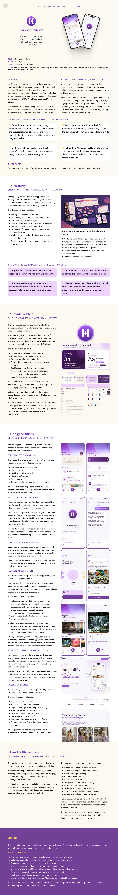
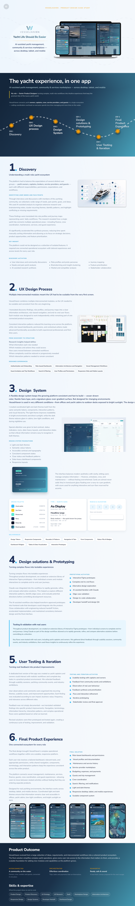
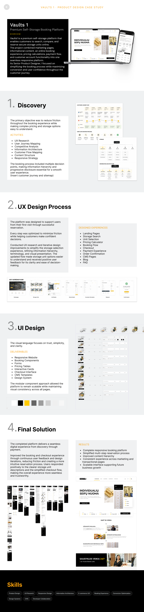
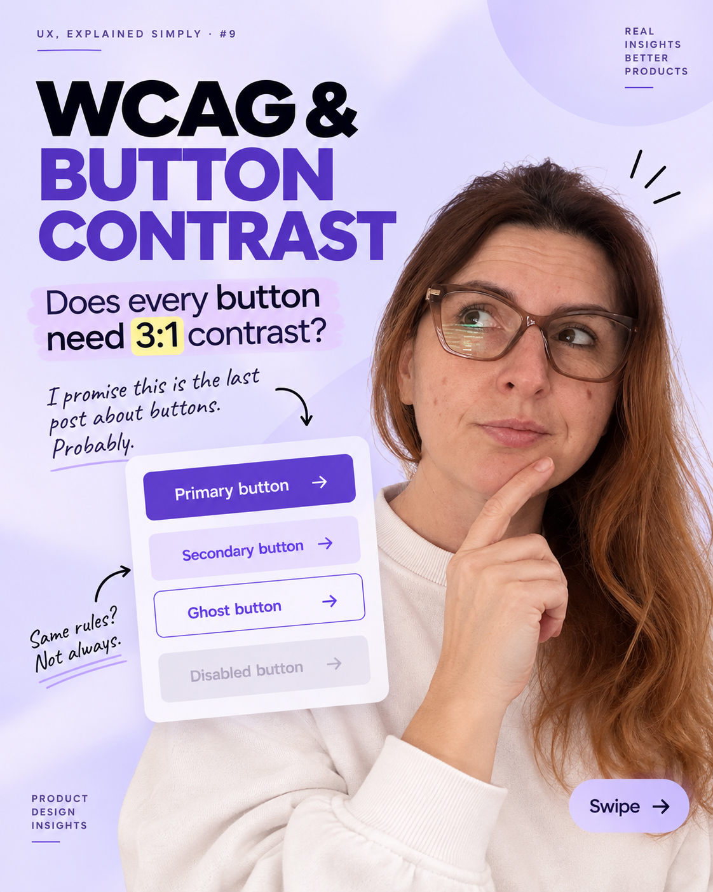

Product & UX
Understanding user needs, business goals, and complex journeys.
OLESYA LEVYTSKA / SENIOR PRODUCT & UX/UI DESIGNER
I combine research, product analytics, and thoughtful UI design to make complex journeys easier to use. I work closely with teams through design, implementation, and iteration.
01 / SELECTED WORK
A focused selection across health, SaaS operations, and self-service booking.

Personalized menopause support shaped through research, behavioral insights, and ongoing product iteration.
View case study ↗
Role-based workflows that make yacht operations, vessel data, and team collaboration easier to manage.
View case study ↗
A clearer search-to-reservation journey for comparing storage options and moving confidently toward booking.
View case study ↗02 / HOW I WORK
I work where user needs, product goals, and technical constraints meet. The aim is not more interface, but clearer journeys that teams can build, measure, and improve.
Experience & credentials ↗03 / EXPERTISE
Understanding user needs, business goals, and complex journeys.
Using feedback, usability testing, funnels, and behavior data to guide decisions.
Creating clear interfaces, accessible interactions, reusable components, and responsive experiences.
Working with developers, reviewing implementation, and using AI-assisted prototyping and design-to-code workflows.
Figma · FigJam · Mixpanel · Hotjar · Claude · ChatGPT · Cursor · GitHub · HTML/CSS · React / Next.js
04 / UX, EXPLAINED SIMPLY
Short practical notes and carousel posts about accessibility, product decisions, analytics, and research.

Clarifies when button boundaries and adjacent colors need enough contrast to remain perceivable.
View LinkedIn profile ↗Looks at repeated missed actions as evidence for hierarchy, timing, and flow improvements.
Read post on LinkedIn ↗Included because an exact LinkedIn publication URL exists; topic naming needs the original cover or post text.
Open publication ↗